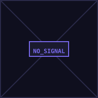

SYSTEM OPS // DATA SOVEREIGNTY
Secure and encrypt all personal data points.
Ensure 24/7 global access to information.
Reclaim sovereignty from Big Tech ecosystems.
Using Kiwix to host a massive collection of ZIM files, creating a "Civilization Starter Kit" that requires zero internet. My archive includes the entire Project Gutenberg library, thousands of repair guides from iFixit, survival manuals (Canadian Prepper), and the complete archives of Stack Exchange (CS, Electronics, Arduino) to ensure that engineering and medical knowledge is never lost.
Optimized for privacy and high-level research. Encrypted credentials are managed locally via KeePass, and my personal knowledge graph is built in Obsidian. For technical documentation and academic writing, I utilize TexStudio and LaTeX, ensuring professional output without dependence on proprietary cloud software.
My mobile device is transformed from a tracking beacon into a utility tool. I utilize Musicolet for locally-stored high-fidelity audio, rejecting subscription-based streaming. For navigation, I have completely replaced Google Maps with OSM (OpenStreetMap) data, allowing for precise worldwide navigation without an active connection or data harvesting.
A 64GB hardware fallback module carried at all times. This cold-storage unit contains a snapshot of my most vital documents, identity proofs, and recovery keys. This "dead man's switch" ensures that if physical hardware is lost or network infrastructure collapses, my critical information remains physically on my person.
This manifest index is provided for those who wish to replicate this Digital Alexandria. These sources represent the core foundations of human knowledge, engineering, and survival resilience, compressed for offline autonomy.
